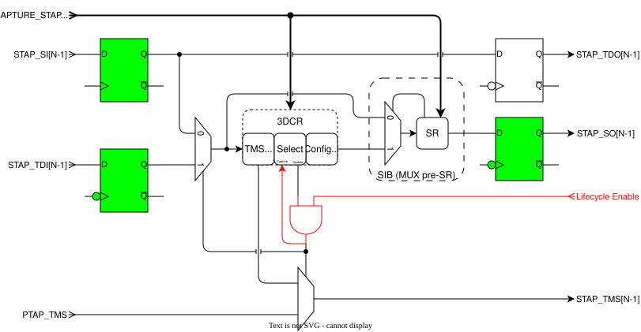

Architecture
IEEE 1838-2019 enables hierarchical interconnection of TAP controllers across multiple chiplets. Each STAP interface provides an extension of a SiP’s primary JTAG interface across internal chiplets. When enabled, a STAP interface is part of the JTAG scan chain, otherwise the STAP interface is bypassed. In addition, STAPs can also support connection of other TAP interfaces included on the same chiplet as the PTAP.
Module Hierarchy
The STAP implementation consists of three main components integrated within a single module:
| Module | Purpose | Conditional |
|---|---|---|
|
Segment Insertion Bit multiplexer for TAP control signal routing |
Always |
|
3-bit 3DCR control register (config_hold, stap_sel, tms_hold) |
Always |
Lockup latches |
TDO lockup (always), TDI lockup (optional), scan output lockup (optional) |
Per parameter |
STAP Module
Each STAP has a 3-bit 3DCR TDR that defines the control interface for the STAP. Note that the STAP 3DCRs take a distributed segment approach to improve timing, as opposed to the single monolithic PTAP 3DCR approach detailed in the IEEE 1838 standard. This 3DCR is connected inline within each STAP’s scan chain. A SIB is inserted at the end of the 3DCR to exclude it from the scan chain when not needed.
When not selected, the STAP interface TMS signal is tied to the constant value specified by the TMS-Hold bit of the 3DCR, otherwise it follows the PTAP TMS signal.
The following diagram illustrates the STAP architecture and the details of the
3DCR register. The green colored flops are optional, each configured via
parameters. The red AND gate and nets implement debug disable when
security_disable_i is asserted.

3DCR Register
The 3-bit 3DCR control register is implemented using prim_jtag_scan_reg with a
loopback configuration. The register outputs feed back to the data inputs,
allowing the register to retain its configuration across scan operations while
still being scannable for updates.
| Bit | Field | Reset | Description |
|---|---|---|---|
2 |
TMS-Hold |
0 |
Defines the parked TMS value when the STAP is disabled. When |
1 |
Select (stap_sel) |
0 |
Enables the STAP scan interface. When |
0 |
Config-Hold |
0 |
Prevents reset of the 3DCR register when the TAP enters Test-Logic-Reset state. The register is reset by |
STAP Types
The following table lists the STAPs allocated for the DTP JTAG interface. The STAPs are serially chained TDI → TDO according to their order in this table from top to bottom. In addition to the STAPs integrated into the DTP, the STAP scan chain is ported out of the DTP so that the chiplet integrator may add additional STAPs closer to their point of use.
| Purpose | Description |
|---|---|
STAP to Next Chiplet |
This STAP forwards JTAG to the next chiplet in the SiP. |
SMC Core Debug |
Provides access to the internal SMC CPU core debugger TAP. |
SEP Core Debug |
Provides access to the internal SEP CPU core debugger TAP. |
[N-1:0] Additional STAPs |
Provides access to additional STAPs for on or off-chip TAP connectivity. |
Extended STAP Scan Interface |
Provides the ability to add STAPs external to the DTP closer to their point of use. |
Debug Disable
The security_disable_i input is active-high (1 = STAP disabled). When it is
asserted, three aspects of STAP operation are blocked:
| Signal | Behavior when asserted |
|---|---|
|
Forced to 0 regardless of the 3DCR Select bit, so scan data is not routed through the downstream TAP. |
|
Forced to 0, so the downstream TAP cannot leak data on the host TDO even if it is accessed. |
|
Forced to 0, so the 3DCR cannot be updated while the STAP is disabled. |
STAP selection, host TDO, and 3DCR updates are all blocked combinationally at the module output, so there is no timing-dependent bypass of the disable.
Lockup Latches
The STAP implements three types of lockup latches to manage timing across die boundaries and long scan chains. These latches are clocked on the falling edge of TCK to capture data during the second half of the clock cycle, providing setup time margin for the next rising edge.
TDO Lockup Latch
The TDO lockup latch is always present and cannot be disabled. This latch captures the scan data propagating from client to host on the falling edge of TCK. The latch ensures that data from the downstream TAP’s TDO has sufficient setup time before being sampled by the upstream TAP on the rising edge of TCK.
TDI Lockup Latch
The TDI lockup latch is optional and controlled by the TDI_LOCKUP parameter
(default = 0). When enabled, this latch captures the host TDI input on the
falling edge of TCK before routing it to the client TDI output. This adds one
additional cycle of latency but provides timing margin for die boundary
crossings where signal delays may be significant. In the DTP integration, TDI
lockup is enabled only for the I/O STAP that crosses between chiplets.
Scan Output Lockup Latch
The scan output lockup latch is optional and controlled by the SCAN_OUT_LOCKUP
parameter (default = 0). This latch is implemented within the
prim_jtag_sib_mux_pre module and adds a register stage to the client scan
output path. This is typically enabled only on the final STAP in an extended
chain to provide additional output timing margin.